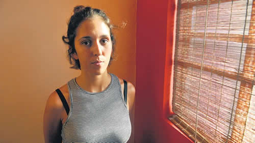

Real Chubut - Agencia de Noticias


“No hay ni un gendarme ni un policía imputados”

Entre los 44 detenidos el 14 de diciembre, el caso de Damiana se destacó por un video que registró los abusos policiales. Ahora, después de ser sobreseída, cuenta el miedo que sufrió y dice que analiza denunciar a la Gendarmería. “¿Qué tiene que pasar para que nos pidan disculpas?”, pregunta.
En el universo de los “memes” que circulan por las redes sociales hay uno que evoca a la princesa Leia de La guerra de las galaxias con su traje blanco, al ser atrapada por los enmascarados soldados imperiales con armas largas, y la compara con la imagen de Damiana Negrin Barcellos, también con un vestido blanco, en el momento que la detiene un grupo de gendarmes que merodeaba la primera manifestación contra la reforma previsional. La brutalidad de la foto de la vida real supera a la de la ficción. El 14 de diciembre, Damiana fue trending topic en Twitter, personaje del día, y le crearon una página en Facebook como figura pública. Su situación, una entre la de 44 detenidos esa tarde, tomó estado público porque alguien filmó desde un balcón a los agentes que la arrestaban mientras intentaba llegar a su casa, uno le manoseaba la cola y la metían en un camión de la fuerza mientras gritaba con desesperación. Estuvo presa un día y le abrieron una causa penal por intimidación pública, igual que al resto. Desde que quedó en libertad quiso hablar, contar y decir lo que se le pasa por la cabeza, pero estaba aterrada. “Tuve miedo puro desde el primer instante, al ver todos esos gendarmes tirándose encima mío, y esa camioneta oscura esperando. Me expresé a los gritos porque si no nadie se iba a dar cuenta, pensé que me iban a desaparecer, que no se sabría nada más de mí. Sólo había visto algo así en los documentales sobre la dictadura”, se desahoga. Ahora está más tranquila porque la sobreseyeron, pero el día que leyó la resolución del juez Claudio Bonadio que la beneficiaba no podía terminar de ponerse contenta. “¿Sabés por qué me absolvieron? –pregunta y responde–. Porque mi tarjeta Sube confirmaba que yo volvía de trabajar y no estaba en la marcha. ¿No es un derecho manifestarse? Aunque tenga miedo, cuando quiera voy a ir igual a las movilizaciones.” Es posible, anticipa, que además haga una denuncia contra Gendarmería por lo que vivió.
Damiana tiene 25 años y es la más chica de tres hermanos. Trabaja todos los días en una papelera, donde es empleada administrativa en el sector de “atención al cliente”. También estudia Cine, aunque está en una etapa de duda sobre su vocación. Le gusta caminar y estar con amigos. Se la ve familiera. Su mamá, Marisa, es brasileña aunque vive en el país hace treinta años y trabaja como asistente social de tercera edad. Su papá, Hugo, uruguayo, es matemático. Viven en un departamento antiguo reciclado, lleno de cuadros, máscaras y artesanías con impronta latinoamericana, cerca del Congreso. Este era el mundo de Damiana hasta que apareció en portales, memes, redes y de pronto cuando retomó su rutina después de lo que llama con ironía “el mejor día de mi vida”, la empezaron a reconocer en el subte y en la calle. La saludaban y la consolaban. La abrazaron desconocidos. No le gusta cuando le dicen “pobrecita, porque vos no estabas haciendo nada”. Eso es cierto, pero aclara que ella suele ir a algunas movilizaciones. “Lo peor –se le encienden los ojos negros– es cuando me aconsejan que me cuide la próxima vez. ¿De qué quieren que me cuide si a mí me agarró el que me tiene que cuidar?”
“Tengo la impresión de que como soy una chica de clase media, que apareció en un video que se viralizó, me prestaron atención. Pero estuve detenida con otras personas que la pasaron mal –acota, y pasa a dar ejemplos–. Hay un señor, que quedó en silla de ruedas por la golpiza. Le dislocaron una pierna. Un chico, Esteban (Rossano) estuvo preso cuarenta días en Marcos Paz: nos había dicho que le plantaron piedras y unos panfletos de agrupaciones de izquierda en la mochila. ¿Y si eran de Cambiemos, iba preso? Había dos personas que viven en situación de calle. Un hombre a quien su familia no lo podía encontrar porque su esposa es sordomuda. Cuando un grupo de diez salimos en libertad todas las cámaras me apuntaban a mí e ignoraban a una chica con rastas o a la que tenía un pañuelo de la campaña por el derecho al aborto”.
Un día en Gendarmería
Cuando hay movilizaciones en la zona de Congreso, Damiana sabe que le conviene tomar el subte B desde su trabajo y después caminar en lugar del colectivo. En su casa se habla de actualidad y de política y estaba al tanto de la marcha. Se bajó en Callao y Corrientes. Quería llegar. De pronto vio que se acercaban unas seis motos de la Policía Federal en contramano con dos policías a bordo: uno conducía y el otro “apuntaba al aire con unas metralletas”. La imagen de esos policías avecinándose les dio temor a ella y otros que decidieron meterse en un local de Farmacity. Sólo salieron una vez que perdieron de vista a los uniformados. “Estoy yendo a casa”, decía el mensaje de audio de Whatsapp que le mandó a su papá. “En Callao y Bartolomé Mitre me detuve porque las vallas impedían pasar. Todo estaba flanqueado por gendarmes. No estaba ahí porque tenía ganas. De pronto escuché un ruido fuerte de las vallas que se abren, un chico sale corriendo y mi reflejo fue correr también por miedo. No sé por qué corrí por la vereda en Mitre y un gendarme me agarró del brazo y me golpeó con una cachiporra. Me caí sobre una moto que estaba en ese lugar, que resultó ser de un bibliotecario también detenido que estaba ahí de casualidad. Me sentaron en el piso, una mujer que se acercó preguntó mi nombre. Lo dije, pero no pensé que me llevarían detenida. De pronto se acercó la camioneta, me levantan creo que una gendarme mujer pero se vienen un montón, varones, y fue el peor agujero negro que vi en mi vida”, recuerda.
Dentro de la camioneta de Gendarmería se encontró con otros tres detenidos, luego los pasaron a otra, con otras personas, mientras escuchaban a la gente desde afuera que les rogaba: “¡Griten sus nombres!”. Ese rato a bordo pareció una película. “Si cooperan no les va a pasar nada”, les advirtió una gendarme. Junto con Damiana iba una pareja: Valentina y Facundo. Viven frente al Congreso. Ella se había asustado porque él debía volver a la tarde, y no llegaba. Estaba muy nerviosa, una vecina la ayudó a salir a la calle y hasta un médico de Gendarmería la ayudó a pasar las vallas para ir a lo de un amigo que vive cerca, donde finalmente pudo reunirse con su novio. Cerca de las seis, cuando juntos trataban de volver a su casa los detuvieron los gendarmes.
Damiana estaba angustiada y sintió que se le cerraba el pecho, como en un cuadro de asma. De casualidad tenía un “puf” con ella, pidió permiso y le dejaron aplicarlo. “Valentina me dio la mano para tranquilizarme, y lo impresionante fue que le dio a ella un ataque de pánico”, describe Damiana. A la pareja el juez le dictó falta de mérito, pero no los desvinculó de la causa, porque espera a ver si aparece una imagen que los comprometa, por ejemplo, tirando una piedra. En el reino judicial del revés, cada uno tiene que demostrar su inocencia para dejar de estar sospechado, aunque ninguna prueba lo comprometa. Bonadio tampoco creyó que Valentina esté bajo tratamiento psiquiátrico.
El vehículo llegó a una dependencia de Gendarmería que no está preparada para alojar detenidos. Los gendarmes que trabajan allí recibieron a los 14 presos, en su mayoría jóvenes, con desconcierto. En la desesperación, Damiana decidió probar suerte y preguntar si podía comunicarse con su familia. Para su sorpresa le dijeron que sí. La dejaron usar su propio celular y habló con su mamá. A pesar de que les costó encontrar el lugar, a la vuelta del Edificio Centinela, sus padres fueron los primeros en llegar. Cuando la quisieron abrazar, un agente intentó frenarlos: “Tranquilos que ellos (los detenidos) están mejor que nosotros”. Sólo con ese abrazo se empezó a retirar de su cabeza la fantasía de que podía desaparecer. De pronto se vio alegrándose por cosas absurdas como que la dejaran fumar. Nunca fuma más de un cigarrillo al día, pero en ese lugar era la única forma que encontraba de matar el tiempo y la angustia. Se sintió contenta de poder ir al baño, que le dieran de comer y que apagaran las luces a la noche por si acaso alguien lograba dormir, de un lado las mujeres y del otro los varones, separados por una hilera de sillas. Los varones estaban esposados y les sacaron los cordones de las zapatillas. Hubo un silencio profundo cuando les informaron quién era el juez les había tocado, Bonadio. Todos conocían el nombre de alguna manera.
A la mañana, un gendarme irrumpió en esa gran habitación donde estaban amontonados y les leyó un acta les atribuía provocaciones, disturbios y destrozos. “Varios nos quejamos porque no estábamos de acuerdo con lo que leían, no era cierto, y nos enojamos. Nos estaban metiendo presos por las dudas. Nos decían que habían filmado y que iban a mostrar todo. Ya en la camioneta nos decían ‘ustedes estaban todos ahí’”, repasa Damiana.
Como no estaban incomunicados, el primer día pudieron usar celulares sin restricción; recién al día siguiente con la nueva guardia de gendarmes se endurecieron las medidas. Cuando entró a su Facebook se topó con el video de su detención. Se quedó helada. La filmación que se estaba viralizando, explicaba las 40 llamadas perdidas que tenía de gente conocida y el trato diferenciado o prudente que advertía que por momentos le daban respecto de otras personas. El video era la muestra palmaria de una detención arbitraria y violenta. “No tuve el valor de abrirlo y mirarlo enseguida, recién lo hice al día siguiente”, cuenta. En el momento que lo vio pudo poner sustancia a todo eso que le parecía una pesadilla y entendió ese recuerdo que tenía de alguien manoseándola sobre el vestidito. Lo vio. El gendarme, la mano y ella sacándola. Todos los gendarmes arrastrándola al camión.
Por el famoso video, que al día de hoy no tiene ni la menor idea de quién filmó, recibió la visita de Hebe de Bonafini, a quien no conocía en persona. No bien la abrazó, Damiana rompió en llanto. Le agradeció. Pero le pidió por favor que las Madres de Plaza de Mayo hablaran con todos los demás presos. “Yo no era más que el resto –explica su sentimiento–, no estaba sola detenida injustamente. Solo que circulaba ese video, y tengo amigos abogados que actuaron rápido para ayudar a mi familia.” Había pasado horas conversando con el resto. Ya conocía varias historias, y a ella la habían abrazado cuando lo necesitó, como en el momento que la llamó entre llantos su hermana Martina que vive en Brasil y estaba en Europa.
“¿Nadie nos pide disculpas?”
Damiana tiene un tatuaje cerca del hombro, en la espalda: es una frase de la canción “Love”, de John Lennon, que le calzaba justo sus sentimientos al momento de recuperar la libertad: “Love is needing to be loved” o “amor es necesitar ser amado”. También tiene tatuado un elefante de perfil (hecho con puntos y rayas), el rayo de David Bowie en colores y una estrella. Pasó dos noches sin poder dormir, con la cabeza saturada, con rastros de angustia y una extraña exaltación. Se quedaba mirando series y de pronto se alegraba de estar con sus perros en el sillón. Su celular se iluminaba a cada rato con mensajes de personas preocupadas por ella. Solo la calmaba la compañía de los amigos y la familia. De a ratos tenía miedos, pero no la paralizaban, imaginaba drones observándola, espías en el teléfono. Sus padres, incluso, estaban pendientes por demás de lo que hacía. Cada vez que contaba lo sucedido se ponía a llorar. Y ahora tenía una causa penal, la acusaban de intimidación pública. Ella, que jamás en su vida había pisado un juzgado. A duras penas alguna vez la oficina de sus amigos abogados.
Pasaron solo tres días hasta la siguiente marcha contra la reforma previsional, que fue el lunes 18 de diciembre. Otra vez la misma historia. Setenta detenidos y heridos a granel, varios que perdieron la vista por impactos de balas de goma. Damiana estaba en la casa de unos amigos cuando, en la televisión, vio una conferencia prensa de Mauricio Macri que felicitaba a la policía por su nueva cacería. “Pensé que había entendido mal, pero había entendido bien: estaba diciendo ‘pobrecitos los policías, qué bien actuaron’. Me generó en el momento una angustia terrible, sentía que me estaban tomando el pelo. Me largué a llorar otra vez. ¿Qué tiene que pasar para que nos pidan disculpas? Ni un gesto de preocupación ni de nada ¿Quién nos cuida? ¿Quién nos ampara? Si me llevan presa por estar volviendo a mi casa y a otro lo meten preso por tuitear... Yo estuve detenida con 43 personas y no pasa nada. No hay ni un gendarme ni policía imputado. ¿A nadie van a imputar?”, se enfurece. Después de años, sintió la necesidad de volver a consultar a un psicólogo.
La cita en el juzgado de Bonadio para declarar como sospechosa era el 2 de enero. Los quince días de espera “fueron los más largos de mi vida”, dice. Cuando estaba en Comodoro Py, ese lugar que había visto en los diarios y la televisión, se sentía “una hormiga al lado de un elefante”. “Te pisan, nadie se entera”, piensa en voz alta. Creyó que vería al juez cara a cara, pero eso no sucedió. La recibió un secretario cordial, a quien le narró los hechos. Por esos días fueron declarando todos los demás imputados.
El 26 de enero estaba atendiendo clientes cuando su celular empezó a sonar con insistencia. Seis llamadas perdidas. Bonadio había firmado un fallo (ver aparte). Estaba nerviosa y lo leyó en el subte B, de regreso. “Nunca había leído una resolución, pero igual me pareció la más fea del mundo. Estaba satisfecha porque me sobreseyeron, pero la razón era increíble: que se probó que no estaba en la marcha. Pero tantos otros de los que yo había conocido ese día fueron procesados o quedaron investigados, como Facundo y Valentina. O Pablo Sandoval, el dueño de la moto con la que tropecé, un bibliotecario que solo se había detenido porque no podía pasar. Una chica, Estefanía, a la que acusaban de tomar fotos, a otros de gritar en la marcha”, se enfurece. Al leer los fundamentos se detuvo, uno por uno, en los nombres de los gendarmes que habían declarado como testigos, incriminando a la mayoría de las personas en hechos inexistentes. Trató de recordar sus caras, pero cayó en la cuenta de que casi ninguno de los que la habían atrapado y que subieron al camión llevaban la identificación con sus nombres.
“Quiero denunciarlos, lo voy a hacer –anuncia Damiana Negrin Barcellos, y de pronto se acuerda que algunos le cambiaron el apellido por Ceballos–. Tengo bronca. Y que lo que me pasó a mí y a los demás no sea en vano. Me tuve que callar dos meses esperando que me sobreseyeran, pero ¿qué pensaban? ¿Qué me iba a seguir callando? Voy a tener miedo las próximas marchas, el 8 de marzo, el 24, pero no voy a dejar de ir, sé que hoy tengo que estar ahí más que nunca.”
Fuente: Pagina 12